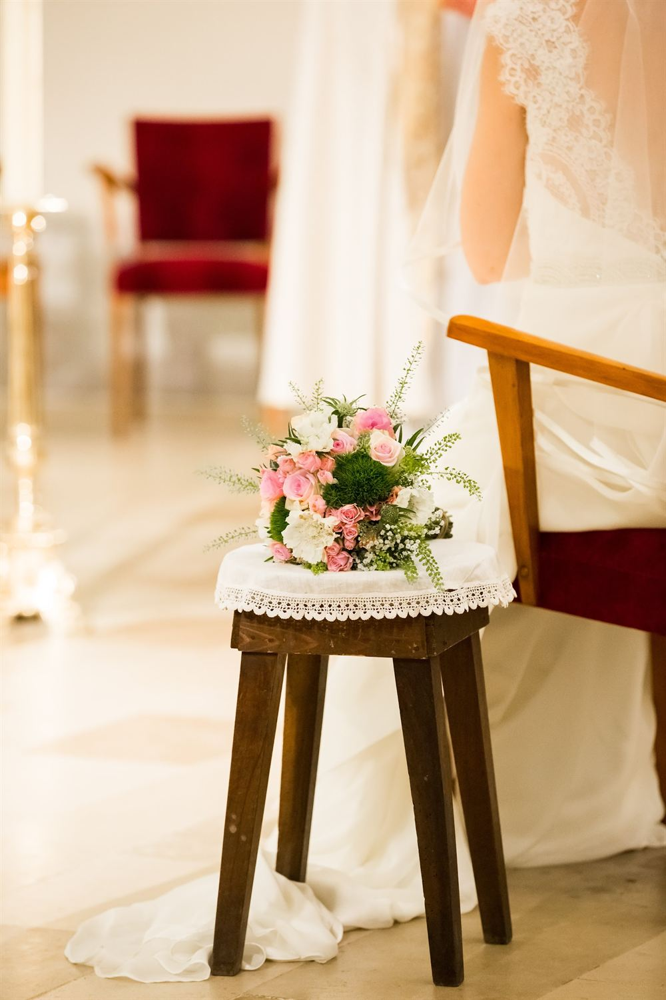
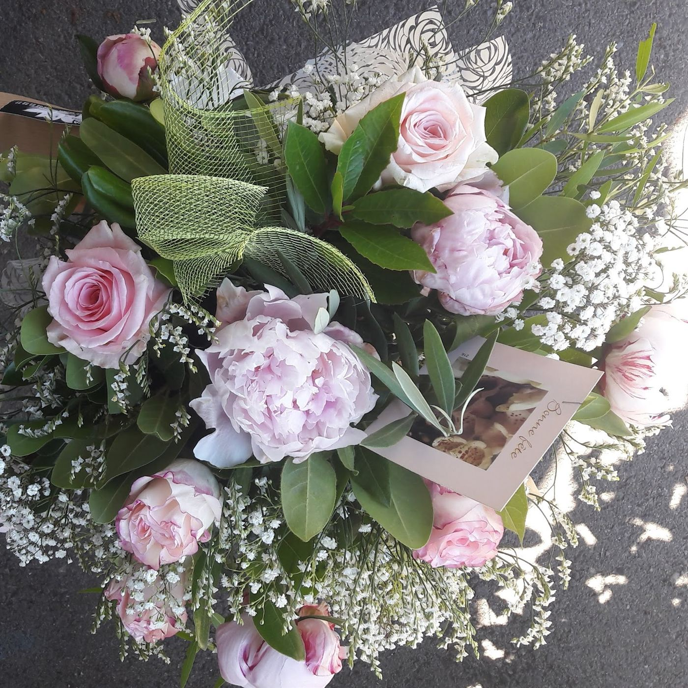
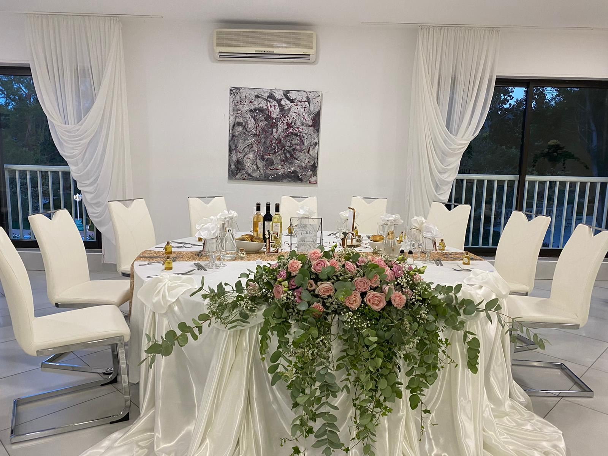
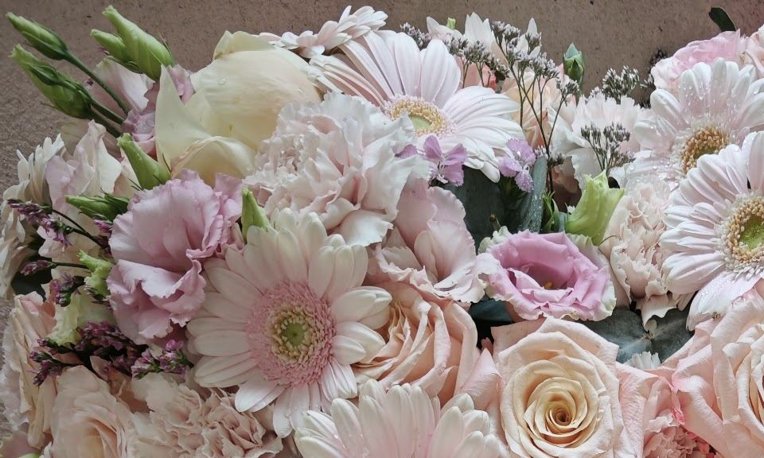
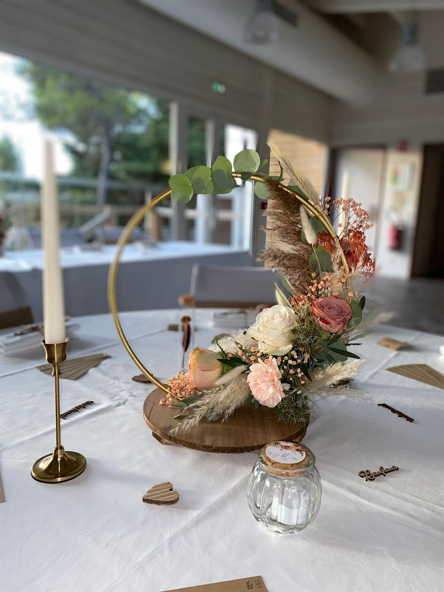
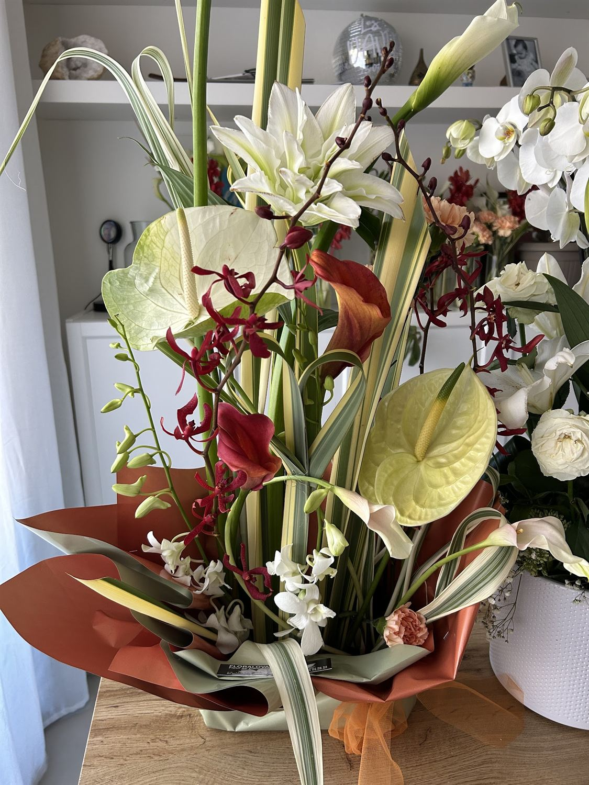
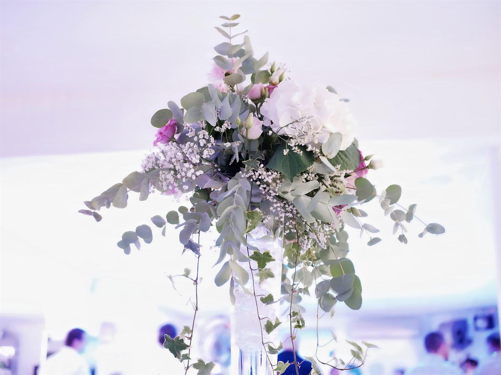
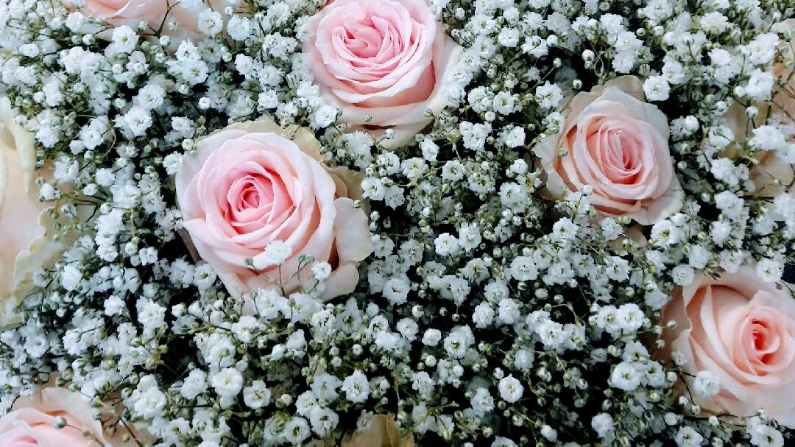

01 Écouter
On commence par vous.
Une date, un lieu, une couleur, un souvenir… Laurence prend le temps de cerner ce que vous n’osez pas encore dire, même quand vous hésitez. C’est souvent là que naît le plus joli bouquet.
Floralova · Artisan fleuriste · Bouc-Bel-Air
Laurence compose vos bouquets, vos mariages et vos hommages. Des fleurs choisies une à une, des couleurs qui racontent quelque chose.
L’atelier de Laurence
01 Écouter
Une date, un lieu, une couleur, un souvenir… Laurence prend le temps de cerner ce que vous n’osez pas encore dire, même quand vous hésitez. C’est souvent là que naît le plus joli bouquet.
02 Choisir
Roses poudrées, pivoines, gypsophile, eucalyptus, mais aussi pampa et fleurs séchées : on marie les textures, on garde la fraîcheur, et vos fleurs durent dans le temps.
03 Composer
Chaque tige est coupée, effeuillée, placée. Bouquet rond, cascade sur la table d’honneur, cercle doré : l’atelier travaille à la main, sans formule toute faite.
04 Offrir
Vous récupérez votre bouquet en boutique, bd Montesquieu, ou vos compositions prennent place le jour de la cérémonie. Il ne vous reste qu’à sourire.



Les créations
Mariage, bouquet du quotidien, hommage, décor de table : chaque création est pensée avec vous, selon vos envies et votre budget.
Faites défiler
Bouquet de mariée, fleurs de table, décor de salle. On se rencontre avant, on compose ensemble.
Ronds, champêtres, pastel ou vitaminés : selon les fleurs de saison et le budget que vous fixez.

Gerbes, coussins, compositions pour la tombe. De la délicatesse, des fleurs fraîches et qui tiennent.

Cercle doré, centres de table, grands vases : des décors chaleureux qui durent bien après la fête.

Un anniversaire, un merci, une naissance, un « je t’aime » : racontez-nous, on compose.

Table d’honneur, centres de table, vases hauts : on habille votre salle de la première à la dernière assiette.
Une idée en tête ?
Parlons-enEn quelques chiffres
Le langage des fleurs

L’amour, dit sans détour. Poudrée, elle devient tendresse.
La galerie
Des mariages, des tables, des bouquets du quotidien. Cliquez pour agrandir.
Toujours à l’écoute et de bon conseil… que des compliments sur les bouquets. Elle a aussi fleuri la tombe de mon papi, avec une demande originale : elle l’a relevée haut la main.
Accueil sympathique. Très belle composition, tellement belle que je n’ai pas pu m’en séparer !
Une véritable artiste de la fleur : professionnelle, à l’écoute, créative… Ses compositions ont fait l’unanimité auprès des invités.
Vous avez poussé la porte de la boutique ? Votre avis aide d’autres futurs mariés, et fait toujours plaisir à l’atelier.
Laisser un avis sur GoogleUne date, une envie, un souvenir
Réserver
Choisissez l’occasion, un créneau parmi les horaires d’ouverture, laissez-nous quelques lignes : votre demande est prête en 30 secondes. Il ne reste qu’à nous l’envoyer, ou à nous appeler.
Votre demande
FC-0000-000Nous trouver
Fleur de cannelle · Floralova
Bd Montesquieu, 13320 Bouc-Bel-Air04 42 22 68 53 · Instagram @floralova.cannelle
Horaires en cours de chargement…
Les horaires peuvent varier les jours fériés. En cas de doute, un coup de fil suffit.